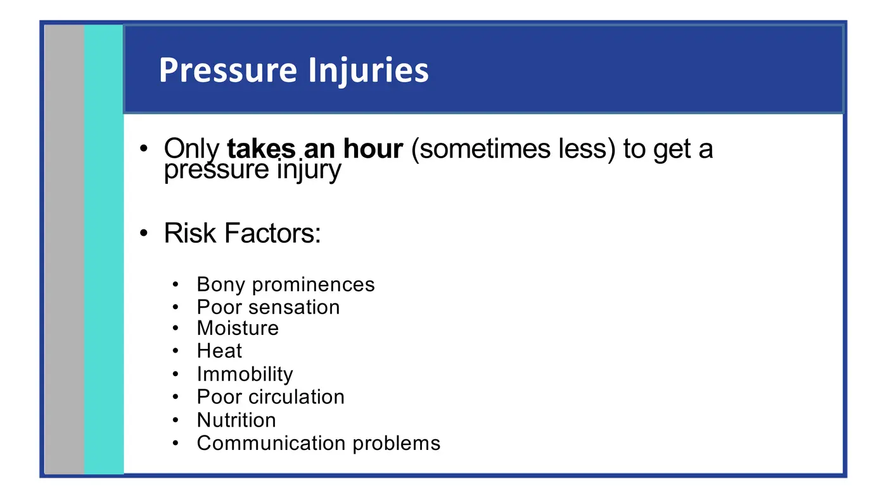
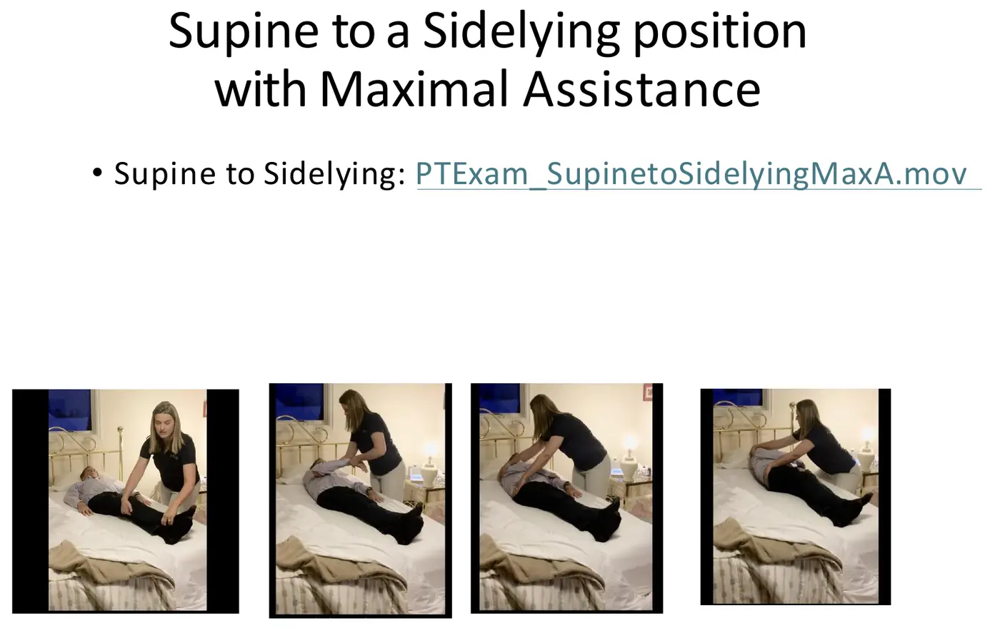
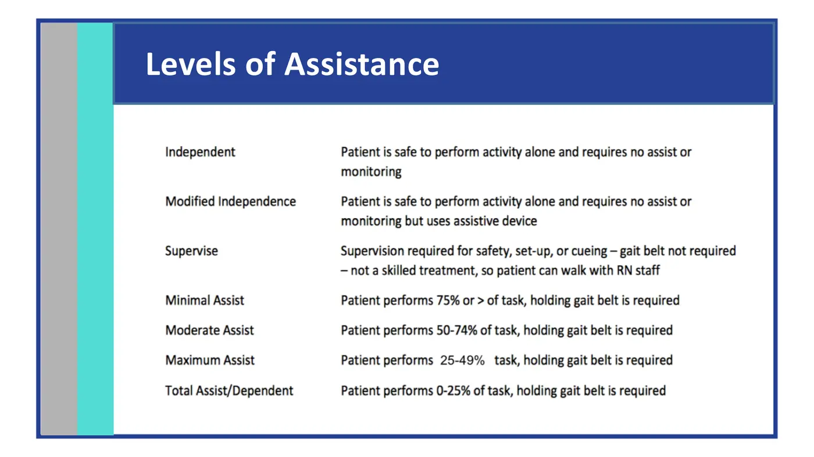
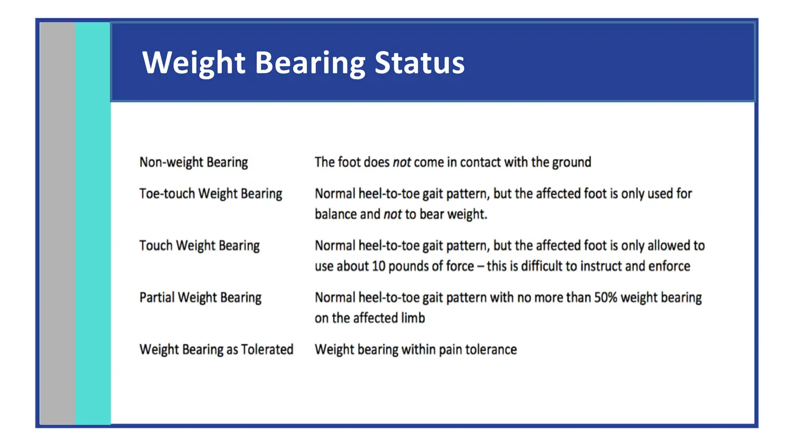
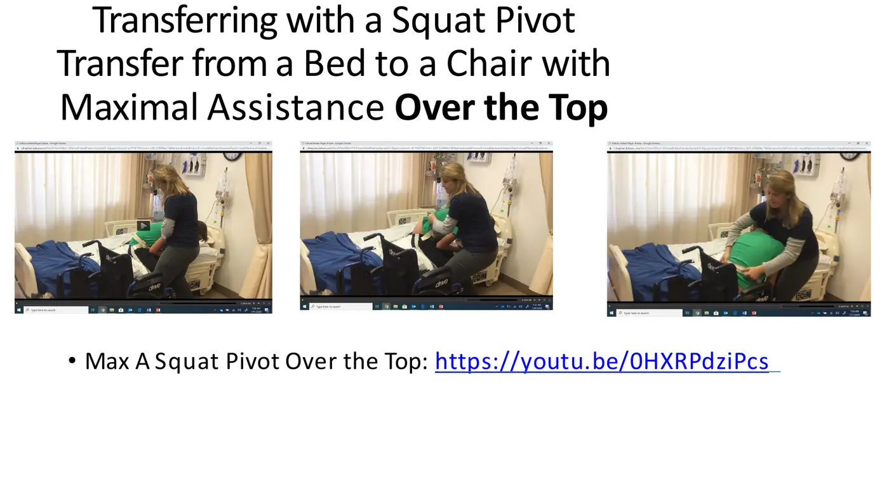
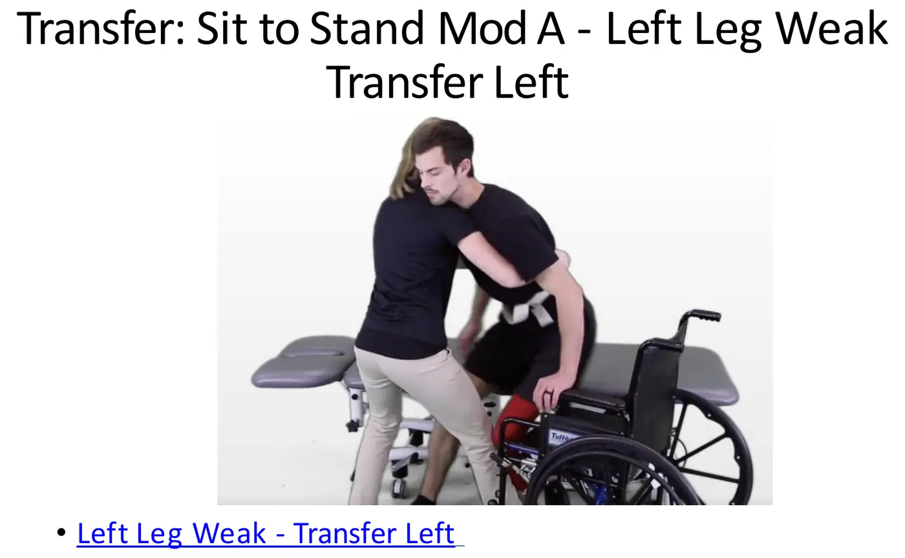
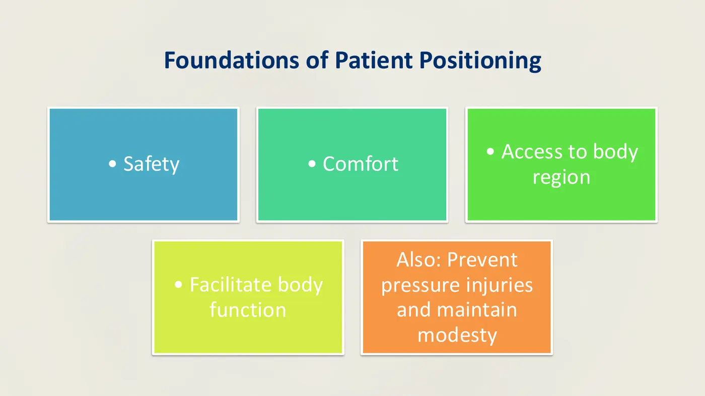

Physical Therapy Fundamentals · 6211
Module 2 — Positioning, Draping, Bed Mobility & Transfers
Topics: 2.1 Draping and Bed Mobility • 2.2 Transfers — with the sync-session technique guides and orthopaedic precautions
📖 How to Use These Notes
- Best used with the lecture playing — keep these open, follow along, and add your own notes as you watch
- Lecture banners mark the start of each topic and run in the same order as the videos
- 🎙 Callouts = direct insights from the instructor's transcript
- ★ Tips = exam-relevant content or things the instructor told you to prepare
- Figures are taken directly from the module's slide decks
- Each topic ends with its own Quick-Reference Glossary
- Written from last year's recordings — if a lecture has been re-recorded or resequenced, Canvas wins
- Watch this module's lecture videos (Mark Shepherd, PT, DPT, OCS, FAAOMPT) in your own Canvas module
- PhysioU playlists are the assigned technique-video platform — log in with your course account
- These are the most-repeated skills in rehab. Every later course assumes you own them.
TOPIC 2.1
Positioning, Draping, and Bed Mobility
1. Five Things to Weigh Every Time You Position Someone
| Consideration | What it means in practice |
|---|---|
| Safety | Patient's AND yours; check the environment before touching anyone |
| Comfort | Pain, post-surgical positions, bodily functions — and the catch: the safest position isn't always the most comfortable one. Your job is to marry the two |
| Access | Position for the body region you're treating — lateral knee work doesn't happen lying on that side; lumbar spine wants prone, not supine |
| Pressure-injury prevention | Ulcerations from sustained pressure on tissue (details below) |
| Facilitating body function | Positions change how the body physiologically functions |
2. Principles: Modesty, Base of Support, Alignment, Precautions
- Modesty — introduce yourself, explain your reasoning, and drape deliberately with towels, gowns, and clothing. Draping protects dignity AND your therapeutic alliance. Base of support — everything supported and comfortable, including your own feet: an awkward stance ruins your safest technique. Alignment — symmetry of head, trunk, legs, pelvis/hip rotation. Precautions — a dependent patient must be repositioned every two hours.
3. Pressure Injuries and Prolonged Positioning

- A pressure injury can develop in an hour or less, especially with paralysis. Risk factors: bony prominences, poor sensation, moisture, heat, immobility, poor circulation, poor nutrition, communication problems — and many of your patients will have ALL of these at once.
- Prolonged positioning also breeds contractures: tissues shorten and stiffen, functional ROM drops, and a pressure wound invites infection.
4. Position-by-Position Reference (from the sync key)
| Position | Skin-check sites | Watch for | Comfort set-up |
|---|---|---|---|
| Supine | Occiput, scapulae, elbows, sacrum/coccyx, heels | Pressure injury, shear, respiratory compromise (obese/kyphotic), hip-knee contracture | Pillow under head, small bolster under knees, float the heels, arms slightly abducted, reposition q2h |
| Side-lying | Ear/face, acromion, ribs, greater trochanter, knees/malleoli | Shoulder subluxation, hip/rib pressure, peroneal nerve compression, rolling shear | Pillow under head + between knees + under upper arm, towel roll behind back, slight protraction of the dependent shoulder |
| Sitting | Ischial tuberosities, scapulae, spinous processes, heels/posterior thighs, elbows | Ischial/sacral ulcers, orthostatic hypotension, sliding forward, spinal strain | Lumbar support, hips/knees at 90°, feet flat, armrests set, weight shifts q15–20 min |
5. Bed Mobility: Principles and Techniques
- Why we assist people out of bed: movement analysis in multiple positions, repositioning, caregiver teaching, and patient practice.
Five principles for guidance and assistance
- Instruct the patient and coordinate — everyone knows the plan
- Reposition the patient as close to you as possible
- Use key points of control: head, shoulders, pelvis, gait belt
- The head moves opposite the hips
- Use momentum
| Technique | Steps that matter |
|---|---|
| Repositioning toward the edge | Slide, NOT lift — forearms under neck/upper back, then lower trunk/pelvis, then thighs/legs, segment by segment |
| Toward the head of the bed | Hook-lying near the edge; stand at mid-chest facing their head; support head + trunk, lift until the inferior scapular angle clears, slide 6–10 inches; repeat |
| Rolling to side-lying | Patient reaches toward the edge on the mobile side; cross legs (mobile on top) or hook-lying; your hands at pelvis + scapula |
| Side-lying → sitting | One hand between trunk and arm on the stable side, other under the thighs; slide legs past the edge; pivot — lower legs while lifting trunk; keep a hand on the shoulder for balance |

- Supine-to-sit with Mod A (your Harmonize assignment skill): patient does everything they can — bends the away leg, reaches across the body; you assist at the ASIS and behind the shoulder to roll; flex both knees; as the legs come off the bed the patient pushes into the bed with the under arm; you assist the legs down while pushing up at the scapula and down on the top ASIS; finish with their feet grounded, your knees blocking theirs.
📱 Required PhysioU playlists — Topic 2.1
Required reading: Pierson & Fairchild's Principles & Techniques of Patient Care, 6e — Ch 5, Positioning and Draping (course textbook).
Topic 2.1 — Quick-Reference Glossary
| Term | Definition |
|---|---|
| Pressure injury | Ulceration from sustained tissue pressure — possible in under an hour |
| Contracture | Tissue shortening/stiffening from prolonged positioning |
| Blanched skin | Pressure sign — inadequate circulation; document and report |
| Key points of control | Head, shoulders, pelvis, gait belt |
| Head-hips relationship | Head moves opposite the direction the hips need to go |
| Float the heels | Pillow under calves so heels bear no pressure in supine |
| q2h / q15–20 min | Reposition dependent patients / sitting weight shifts |
TOPIC 2.2
Transfers
1. Body Mechanics First
- Breathe — holding your breath under load is a Valsalva: you can hurt yourself or pass out mid-transfer. Stay close to the patient. Wide base of support — which happens naturally when you get close, spread your legs, bend your knees. Lift with the large muscle groups — the legs.
- Why it matters: efficiency (in some settings you'll transfer someone every 15–30 minutes all day), decreased threat of harm — “if we're not safe as clinicians, our patient is automatically not safe” — and control: a practitioner with a set stance reads as in command, and the patient feels it.
2. The Shared Language: Assistance Levels and Weight Bearing

| Level | Patient performs | Gait belt |
|---|---|---|
| Independent | Everything, alone — no assist or monitoring | — |
| Modified Independence | Alone but uses a device | — |
| Supervise | Needs safety/set-up/cueing only — not skilled treatment | Not required |
| Minimal Assist | ≥ 75% of the task | Required |
| Moderate Assist | 50–74% | Required |
| Maximal Assist | 25–49% | Required |
| Total Assist / Dependent | 0–25% | Required |

| Status | Meaning |
|---|---|
| NWB — non-weight bearing | The foot never contacts the ground |
| TTWB — toe-touch | Normal heel-to-toe pattern but the foot is only for balance, not weight |
| Touch WB | Only ~10 pounds of force allowed — hard to instruct and enforce |
| PWB — partial | No more than 50% of body weight on the limb |
| WBAT — as tolerated | Weight bearing within pain tolerance |
- Weight-bearing status can apply to the upper extremity too, not just the leg.
3. The Four Procedural Tips
| Tip | In practice |
|---|---|
| 1. Plan ahead | THE first step: scan the environment, do a thorough chart review (baseline strength, cognition, vitals), decide positioning and what you need before you start |
| 2. Communicate | Instruct the patient (and family) FIRST — in steps, not the “fire-hydrant approach.” Have them repeat the instructions back. A patient with a TBI may need much smaller chunks |
| 3. Encourage independence | Assist only to the level required — moving a Min A patient like a Mod A steals their progress |
| 4. Provide physical support | Close + wide base; use momentum; establish a leader and count 1-2-3; use bed/mat height to your advantage; ask for help for Max A or dependent patients |
⚠ Critical safety elements — every transfer
- Pre-position and secure all equipment before the lift — wheelchair locked, bed locked, chairs immobile
- Know the patient's abilities — baseline strength, cognition, vitals, chart review
- Do you have enough assistance? Call for help — safety sometimes means two people
- Gait belt — the first thing you should do, and the first thing people forget
4. The Transfer Techniques
| Transfer | When | The essence |
|---|---|---|
| Stand pivot | Patient can stand and take small steps | W/c parallel, brakes locked, footrests off; weight forward (center of mass over feet) → stand → rotate until w/c is directly behind → reach back → controlled descent |
| Squat pivot | Can't fully stand; stays flexed | Knees blocked; head guided away from the target surface; one fluid lift-and-shift of the pelvis toward the chair; assist from front or over-the-top |
| Pop-over | No lower-extremity use (bilateral NWB), strong arms | Angled w/c, knee block; patient lifts body weight on their hands; pelvis shifts while head moves opposite |
| Sliding board | No LE use AND arms too weak for one move | Lean patient away to seat the board under the pelvis; series of small lift-shifts across; lean away again to remove the board |
| Mechanical (Hoyer) lift | Patient can't participate | Sling-based lift — see the required video below |

5. Direction and Guarding: The Two Sync Cases
| Post-op LEFT THA — Mod A | R-sided weakness (stroke) — Max A |
|---|---|
| Transfer toward the RIGHT (non-surgical) side | Transfer toward the LEFT (strong) side |
| Guard from the LEFT (surgical) side | Guard from the RIGHT (weak) side |
| Surgical leg stays extended forward — no flexion >90°, no internal rotation | Block the right knee with your knee THROUGHOUT standing and descent |
| Block the right knee only if unstable | Stabilize the weak pelvis/hip with your thigh |
| Cue: “Push through your right leg — keep your left leg forward” | Cue: “1-2-3 — push through your left leg. Nose over toes, then stand tall” |

- The rule behind both cases: transfer toward the strong/non-surgical side, guard on the affected/surgical side, block the weaker or protected leg as indicated. Document transfer type, assistance level, and safety outcome every time.
6. Orthopaedic Precautions (required handout — full copy in this Drive)
| Population | The must-knows |
|---|---|
| THA — anterior approach | No hip-extension stretch, watch excess ER, no single-knee kneeling, no twisting away from the operated hip, no swinging the leg outward, no straddling |
| THA — posterior approach | No crossing legs, no hip IR, no turning toward the operated hip, no hip flexion past 90° |
| Hip pinning / cage | No specific precautions; weight bearing per the surgeon |
| Lumbar laminectomy ± fusion | “No BLTs” — no Bending, Lifting, Twisting; nothing overhead or >5 lb; log roll; no soft slouchy chairs |
| Cervical surgery ± fusion | Collar until cleared (fusion); no twisting/bending at the waist; 5–10 lb limit; sit ≤30 min unless reclined; stand ≤60 min; log roll in/out of bed |
| Sternal precautions | ≤8 lb (a gallon of milk); no pushing/pulling with the arms in bed; no shoulder flexion/extension >90°; no far cross-body reach; no twisting/deep bending; no breath-holding; brace the chest to cough/sneeze; no driving; report clicking or popping immediately |
📱 Required watching — Topic 2.2
- PhysioU: Gait Belt
- PhysioU: Transfer Set Up
- PhysioU: Supine to Sit
- PhysioU: Sit to Supine
- PhysioU: Stand Pivot (NWB)
- PhysioU: Squat Pivot — both LE weak, both guarded
- PhysioU: Squat Pivot — both LE weak, right leg guarded
- PhysioU: Slide Board — bed to chair
- PhysioU: Slide Board — chair to bed
- Hoyer Lift (3:31) (mechanical lift demo)
Required reading: Pierson & Fairchild, 6e — Ch 8, Transfer Activities (course textbook).
Topic 2.2 — Quick-Reference Glossary
| Term | Definition |
|---|---|
| Valsalva | Breath-holding under load — the thing you must NOT do while lifting |
| Min / Mod / Max / Total assist | Patient performs ≥75% / 50–74% / 25–49% / 0–25% |
| NWB / TTWB / PWB / WBAT | None / balance-only / ≤50% / within pain tolerance |
| Stand vs squat pivot | Standing transitional posture vs flexed lift-and-shift with knee block |
| Pop-over / sliding board | No-LE transfers: one strong-arm lift vs a series of small shifts across a board |
| Knee block | Your knee bracing the patient's weak or protected knee |
| No BLTs | Lumbar-surgery mantra: no Bending, Lifting, Twisting |
| Sternal 8-lb rule | Post-sternotomy lifting limit — a gallon of milk |
| Nose over toes | The cue that gets the center of mass over the feet before standing |
SYNC SESSION
Clinical Application — Draping, Bed Mobility, Transfers
The week-2 sync session (Dr. Jason Bartley + Anthony Vertalino) is hands-on lab: a draping conversation, gait-belt application, a positioning breakout case, and round-robin transfer practice — supine→sit Mod A and Max A, side-lying→sit Max A, stand pivot bed→wheelchair Mod A, sit-to-stand variants, squat pivot Max A over-the-top, and a mechanical lift (“Sara Steady”).

📋 Module 2 assignment
- Harmonize — Bed Mobility: video yourself performing a supine-to-sit transfer with moderate assistance (a partner plays the patient doing ~50% of the work), narrating each step: introduce yourself, explain the plan, consent, drape-sheet removal, ASIS/shoulder hand placement, head-opposite-hips, controlled sit
- Post to Harmonize + reply to two peers — check your own Canvas for due dates